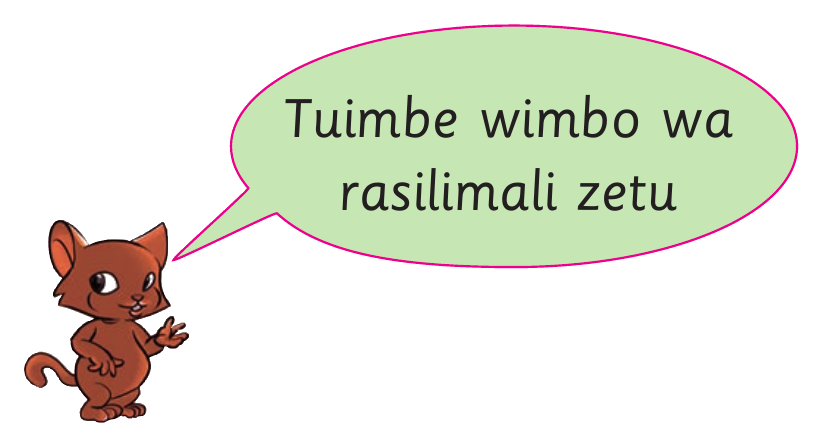

Tuimbe wimbo wa rasilimali zetu

Rasilimali zetu
Naipenda nchi yangu Tanzania
Najivunia kuwa Mtanzania, nchi yapendeza yavutia
Hakika Tanzania umetia fora x2
Rasilimali zetu nitazilinda,
maana huo ndio urithi wetu x2
Mbuga za wanyama zavutia, milima na mabonde vyapendeza,
Mlima Kilimanjaro urefu wake
Wavutia wageni Tanzania x2
Rasilimali zetu nitazilinda
Maana huo ndio urithi wetu x2.
Zoezi la 12
Shughuli ya kufanya 6
Imba wimbo mwingine unaohusu uzalendo unaoufahamu.